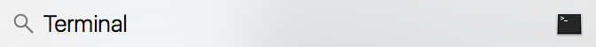

Mac OS
- Go to the upper right corner, select the Magnifying Glass.
- Start typing the word Terminal into the Search box.
- Select the Terminal app to run.

Windows
- Future work: Windows’ Linux Subsystem (WLS2). This is not suitable now due to older Windows versions and also Windows 10 Home do not support this yet.
- Recommended software: MobaXterm (https://mobaxterm.mobatek.net/download-home-edition.html)
- Free
- Includes multiple capabilities (X-windows, Cygwin-based Linux emulator, Putty-based SSH sessions, tunneling, port-forwarding, and many others).